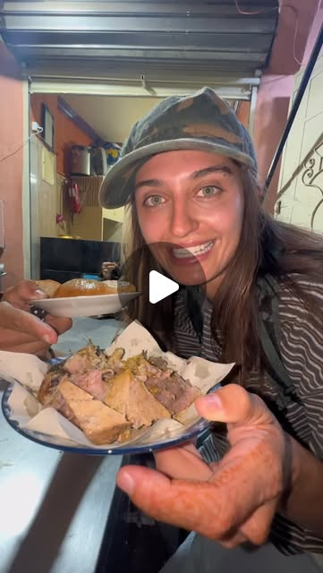

Instagram Reel

street food in morocco 🇲🇦 😋
video transcript (enriched by ClaudeClaw)
Summary
[CAPTION]
street food in morocco 🇲🇦 😋
[VIDEO]
Let's try street food in Morocco. Not 250.
[CAPTION]
street food in morocco 🇲🇦 😋
[VIDEO]
Let's try street food in Morocco. Not 250. One deer half and 50. What? This is 10 cents. These are like salty donuts. We'll put a finger through it to make the donut. The way around until it comes to the middle, and that's when it's done. Salty donut? Look at that. Oh, you have to eat this with this soup. All of this together was 70 cents. That's so good. Wow. Can I have this one? It's so cute. He was trying to sell it for 10 cents. She's making money on the side for the pool next month. They have brain, so we're gonna try it. Can I do beef brain? Brain sandwich. The flavor's really good. It's just really creamy. Don't touch the skin. Oh. This is a prickly pear fruit. So good. Shay. Shak. We have some Moroccan sweets. Oh, they're so sticky. This is called shekia. That's crazy. He cooked it in honey. That's like a sticky cookie. Let's try this. It's like filled with nuts. This one's my favorite. This is licorice roux. Could chew on it, and it tastes like licorice. Let's get this one. This was two cents. Apparently, you have to suck on it and get it wet first. It's kind of bitter. Oh yeah. Beef liver. Let's try it. Don't know if I like livery, but we're still gonna try it. That is really, really good. They also have a piece of fat here. I guess we should try the fat too. It's so good. We have sheep's head. They must not be called like a high bulk. Demon? Seaman is sheep seamen. It's semen bread. Oh semen juice. Okay, so the way that they cook this is they steam it in sheep semen. Bread is dipped in the semen water. Sheep nut, like literally sheep ball and nut. My first taste of nut ever in my life. It's good. Sheep lip, let's try this. That's really good. That's the year. This bread is dipped in semen. So sticky. Okay, now we're gonna try snail. Apparently these are natural Afro Disiac. It's the snail head. Wait, that was good. Okay, now I need to shout out my food tour guide. He's literally the best. You can book him on Airbnb, he's the best rated in Morocco, right?
View original on Instagram Reel →